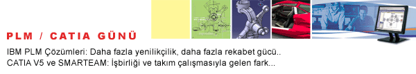

|
 CATIA
PLM GÜNÜ, Gün ürün tasarýmcýlarýnýn günü: CATIA
PLM GÜNÜ, Gün ürün tasarýmcýlarýnýn günü:
IBM
Türk, "CATIA PLM Günü"nde dünyanýn bir numaralý
endüstriyel ürün tasarýmý platformu CATIA V5'in yeni sürümü
R11'in ön tanýtýmýný yapacak ve Ürün Yaþamçevrimi (Product
Lifecycle Management - PLM) vizyonunu müþterileri ile paylaþacak.
Endüstriyel ürün tasarýmý ve ürün yaþamçevrimi yönetimi dünyasýndaki
en son yenilikler Türkiye'deki kullanýcýlarla buluþmak için
gün sayýyor. Ürün Yaþamçevrimi (Product Llifecycle Management
- PLM) pazarýnýn en önemli ismi IBM Türk, 4 Haziran 2003 tarihinde
Ýstanbul Ceylan Intercontinental Oteli'nde, bu alana yönelik
olarak çýkardýðý yeni ürünlerini tanýtmak ve pazara iliþkin
vizyonunu anlatmak için "CATIA PLM Günü" adlý bir
etkinlik düzenliyor.
CATIA
PLM Günü'nde, IBM Türk ile uzun yýllardan beri IBM'in teknolojik
iþbirliði yaptýðý ve PLM dünyasýnýn en önemli þirketi olarak
kabul edilen Dassault Systems yetkilileri , PLM vizyonlarýný
anlatacaklar. Etkinlik sýrasýnda PLM dünyasýnýn lider yazýlýmý
CATIA V5'in yeni sürümü R11'in ön tanýtýmý da yapýlacak.
Konuþmacýlar,
PLM platformlarýnýn endüstriyel ürün tasarlayan ve yeni ürünler
geliþtiren þirketler için sunduðu olanaklarý deðerlendirecekler
ve kazandýrdýðý rekabet avantajlarý hakkýnda bilgi verecekler.
Etkinlik sýrasýnda IBM Çözüm Ortaklarý, CATIA V5 ile "Geriye
Doðru Mühendislik Süreci", "Otomotiv Endüstrisinde
Beyaz Gövde Tasarým ve Ýmalatýnda CATIA V5" ve "Kalýp
Tasarým Sürecinde CATIA V5" baþlýklý sunumlar yapacaklar.
Etkinliðin "Müþteri Baþarýlarý" bölümünde IBM CATIA
V5 kullanýcýsý Profil Sanayi A.Þ., CATIA uygulamalarýný etkinlik
katýlýmcýlarýyla paylaþacak:

Agenda
09:30-10:00
Kayýt
10:00-10:05 Açýlýþ, S. Muftuoðlu - IBM
10:05-10:25 IBM ve PLM Vizyonu, G. Gonella - IBM
10:25-10:45 IBM PLM Türkiye: Neden farklýyýz? S. Muftuoðlu
- IBM
10:45-11:30 Dassault Systemes:Rekabette PLM ile kazanýn,
F. Bernard - DS
11:30-11:45 Kahve Molasý
11:45-12:30 CATIA V5R11: CATIA V5'de ki son yenilikler,
L.Brivio - IBM
12:30-13:30 Öðle Yemeði
13:30-14:00 CATIA V5 Ürün Gösterisi; Beyaz Gövde Tasarým
ve Analizinde CATIA V5, Grup Otomasyon
14:00-14:30 CATIA V5 Ürün Gösterisi: CATIA V5'le Tersine
Mühendislikte mükemmeli yakalayýn, Cadem A.Þ.
14:30-15:00 CATIA V5 Ürün Gösterisi: Neden kalýpçýlar
CATIA V5 teknolojisine daha yakýndan bakmalý? Arge Müh.
15:00-15:30 Kahve Molasý
15:30-16:00 Müþteri Proje Sunumu: Profil Sanayi A.Þ.:
Kalýp tasarým ve imalat sürecinde uçtan uca CATIA V5
16:00-16:30 Kapanýþ
PLM
/ CATIA Günü
Ceylan Intercontinental
4 Haziran 2003, Çarþamba, 9:30
LCV:
(212) 327 21 47
Bahar KARAALÝ
PLM
hakkýnda:
Ýþbirliði,
yenilikçilik ve yeni pazarlara eriþim: Dassault Systemes ürünlerinden
oluþan IBM PLM Çözümleri, açýk ve takým çalýþmasýný kolaylaþtýran
bir altyapý oluþturur. IBM PLM Çözümleri süreçlerinizi kýsaltýr,
üretim sürecini etkinleþtirir ve maliyetleri düþürürken yenilikçilik
potansiyelinizi artýrýr.
Editöre
not:
IBM, yenilikçi buluþlarýyla iþ dünyasýna 80 yýldýr hizmet
veren, dünyanýn 100'ün üzerinde ülkesinde 300 binden fazla
çalýþana sahip dünyanýn en büyük bilgi teknolojileri þirketidir.
e-business'ýn öncüsü IBM, bilgisayar sistemleri, yazýlým,
donaným, að sistemleri, depolama araçlarý ve mikroelektronik
konularýndaki ürünlerini her sektörden müþterileri için deðere
dönüþtürüyor. 1935 yýlýnda tek kiþilik bir temsilcilikle Türkiye'de
faaliyete geçen IBM Türk, bugün 300'ü aþkýn çalýþaný ile Türkiye'deki
Bilgi Teknolojileri sektörünün geliþimine öncülük ediyor:
www.ibm.com
/ www.ibm.com/tr
|